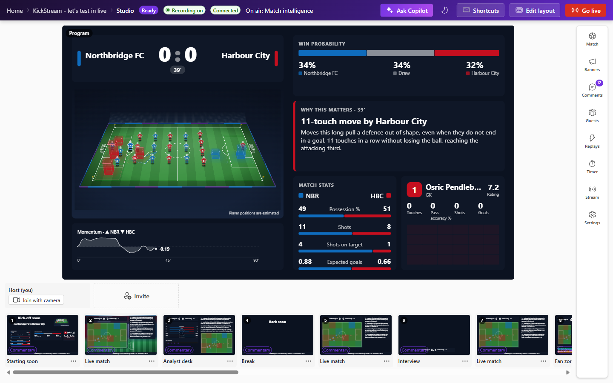
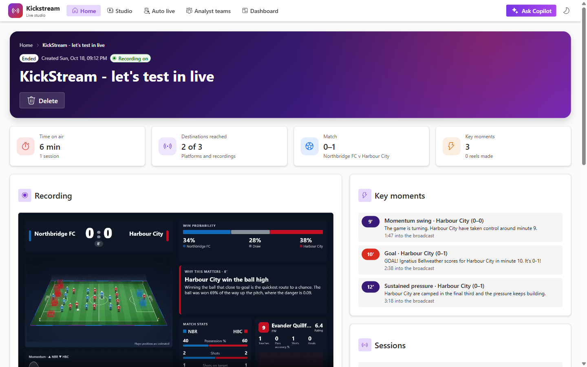
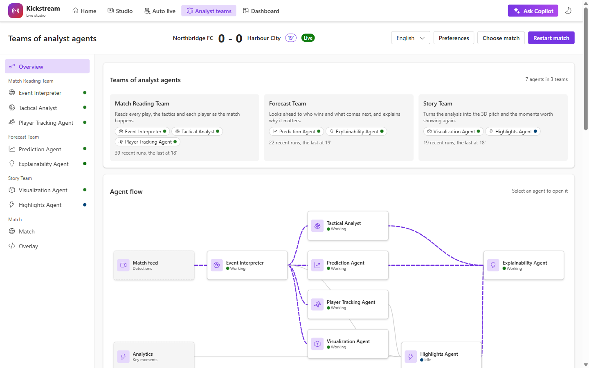
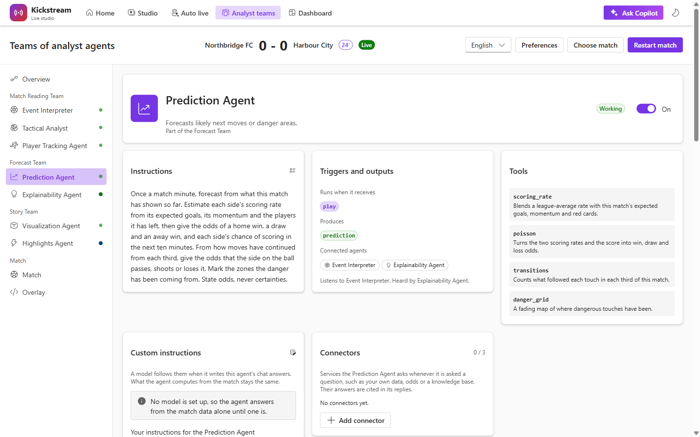
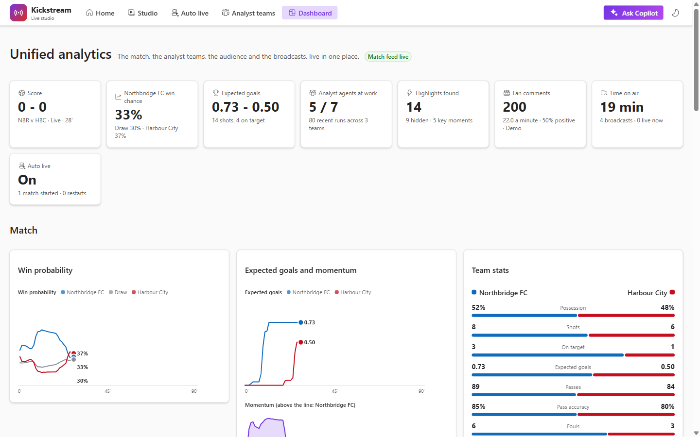
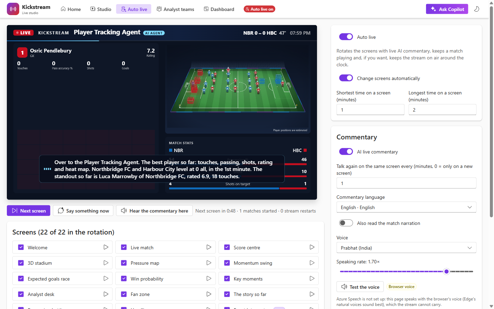

Functional capabilities
What an operator can do
The path through the product is Home, then a broadcast, then the studio. The studio always works on one broadcast. Scenes are one library shared by every broadcast.
Studio

The program is the largest thing on screen. The top bar names the broadcast, the output state (Off air, Connecting, or LIVE with elapsed time), the scene on air, Edit layout, Ask Copilot, and the single Go live / End broadcast control. Backstage holds the host and guests. A scene strip under the stage switches the program with a click. Keyboard shortcuts are not implemented. The first nine tiles show the numbers 1–9, and the Shortcuts control stays disabled with the title “Coming in a later phase”. The tool rail opens one of: Match, Banners, Comments, Guests, Replays, Timer, Stream, Settings.
Built-in scene templates: Starting soon, Live match, Analyst desk, Break, Full-time, Interview, Match intelligence, Fan zone, and 3D pitch. The program carries one commentary, Fan or Analyst, for the whole studio; scenes do not choose their own. Banners fire themselves for goals and red cards, and a goal plays a short celebration on the program. Replays animate the 20 seconds before a key moment. A start countdown starts the queued match and cuts to the Live scene; a break cuts away and comes back.
Widgets include a score card, charts, a prediction, a “why it matters” card, a 3D pitch, a player card, comments, a poll, superchats, and a spotlight. Elements fade and rise unless the operating system asks for reduced motion. Edit layout snaps, layers and deletes elements, and a scene can take one of nine original background plates (Night, Claret night, Sun gold, Red and black, Blue night, Navy gold, European night, Super League, Matchday pitch); they are broadcast looks, not a club’s or a league’s crest. The host can show their own camera from Settings without Azure, in a large frame when alone on the program; the hidden browser is given the camera and microphone only, never the screen. A server has no camera, so remote guests use Communication Services instead.
Going live, broadcasts, and reels
The Stream tool sends the program to YouTube, X, Facebook and Twitch. The host pastes a stream key. YouTube, Facebook, and Twitch ingest addresses are filled in; X needs the account’s own address as well. Record to file writes an MP4 under .data/recordings/ and needs no key. Each destination shows connecting, live, retrying, or failed. One failure does not stop the others. The stream’s only sound is the guest call: everyone unmuted in the room, including the host when they join with a camera. With nobody in the call, the stream is silent.
A broadcast is one show: title, optional description, and whether to record. End broadcast stops the stream and keeps sessions, recordings, time on air, destinations reached, the score, and key moments. Generate reels cuts up to four 15-second vertical clips (1080×1920) from the recording, around goals, red cards, and big chances. Each clip starts 8 seconds before its moment. With a model, a Highlight Editor picks moments and a Social Copywriter writes the title, caption, and hashtags. The agents never set the in and out points. Without a model, templates do the words. A reel can be edited in Clipchamp and the export added back beside the original.

Analyst teams and the seven agents

/match): a card for each team with its recent runs, and the agent flow from the match feed.| Team | Agent | What it produces |
|---|---|---|
| Match Reading | Event Interpreter | Third, flank, phase, possession sequence, and danger for each detection. |
| Match Reading | Tactical Analyst | Once a minute: pressure, tempo, field tilt, patterns, and a control or chaos fact. |
| Match Reading | Player Tracking Agent | Touches, passing, shots, expected goals, rating, heat map, distance, top speed. |
| Forecast | Prediction Agent | Once a minute: win, draw, loss, chance of a goal in ten minutes, next action, danger grid. |
| Forecast | Explainability Agent | English “why this matters” when patterns change, odds move by 12 points, or a hidden event appears. |
| Story | Visualization Agent | 3D pitch data. Only the ball and the player on it are known positions; others are placed from the formation and drawn dashed. |
| Story | Highlights Agent | Ranked key moments and hidden events: long moves, good saves, high balls won, tactical fouls, unsung players. |
The Analyst teams page shows each agent the way a Copilot Studio agent is declared: instructions, triggers, tools, and connections, plus live output. Preferences there set Fan or Analyst, language, and a favourite club and player. Those preferences stay in the browser.

For the studio’s users, each agent also has custom instructions (up to 2,000 characters, followed by a model after the agent’s own rules; what the agent computes does not change), up to three connectors (the operator’s own services, asked as JSON with a 10-second wait, cited as Connector sources and given to the model as facts, never as instructions, at most 120 calls a match), and a chat answered from that agent’s part of the match. Anyone who can open /match can chat.
Calls the product allows in one match. These are caps, not a measured audience.
Unified analytics

/dashboard is one live page built from the streams the server already sends: the score and odds, expected goals and momentum, team stats and tactics, work by team and every agent’s runs, highlights by kind, the best-rated players, the audience’s mood, platforms and topics, output and recent broadcasts, and auto live. It is a studio page, behind sign-in on a public deployment.
Ask Copilot, fans, and auto live
Ask Copilot, in the top bar of every streamer page, answers from the match being played and from finished matches on this installation (the newest 50 in .data/matches.json). Without a model, answers are assembled from the recorded numbers. With a model, an agent words the answer, at most 40 answers a match, and falls back to the assembled text. The cards and charts never come from the model. Web search is off until the host turns it on: Wikipedia by default, or Tavily when KICKSTREAM_TAVILY_API_KEY is set. Tagging @tactics, @prediction, or another agent limits the question to that agent’s part of the match. The same answers are MCP tools at POST /mcp (ask_copilot, match_state, win_prediction, tactics, player_report, head_to_head, highlight, play_history, why_it_matters, where_play_is). Those tools only read. They do not call a model or search the web.
The Comments tool is the fan zone. A new installation starts on a demo feed, marked Demo on the program. X can be a source with a bearer token and a search query. Any other platform posts to POST /api/fans/ingest. Kickstream keeps the newest 200 comments, one poll, and superchats. Fans pay on their platform. The mood is a word-list guide, not a measurement. Text is cut to length and shown as plain text.

Auto live (/live) runs a channel with nobody in the studio. It cycles 22 full-screen scenes, including one for each match agent and one of all seven at work, on a random gap the operator sets (5 to 10 minutes by default). An AI commentator introduces each scene. Commentary speaks English, Spanish, Hindi, Portuguese, French, German, Italian, Dutch, Polish, Turkish, Arabic, Russian, Chinese, Japanese, Korean, Indonesian, Bengali, Tamil, Urdu or Marathi, each with matching voices; screen labels exist in English, Spanish and Hindi. It uses Azure AI Speech when a key is set, otherwise the browser’s own voice. Only the Azure voice is carried on the captured stream, because the hidden browser has no speakers. Stream 24/7 puts /live?output on the studio’s destinations and restarts it if it drops. While the studio is on air, auto live waits.
Guests
Invites have a role. A Speaker and a Co-host can be placed on stage; a Member never can. A Co-host can open the studio and can do what the host can: go live, end or delete the broadcast, and make or revoke invites. Up to four people are on stage, including the host. Calls use Azure Communication Services Rooms. Revoke kills a link at once. Ending or deleting the broadcast ends them all.